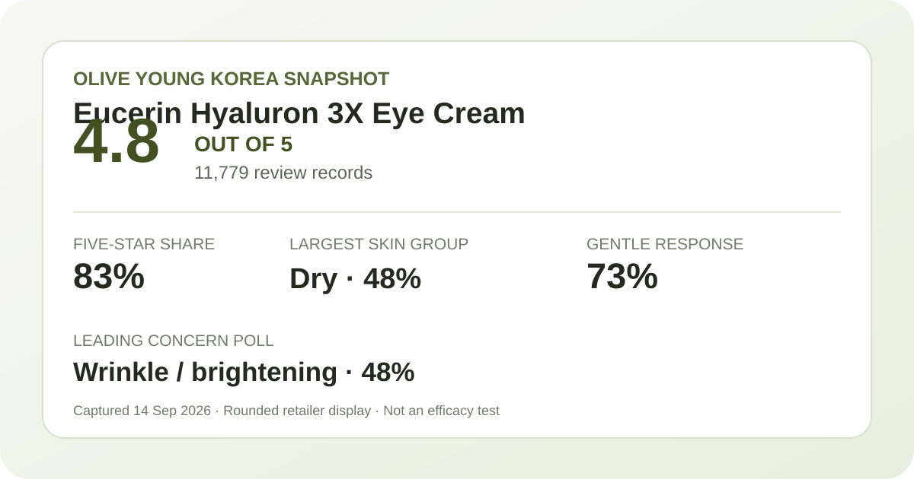
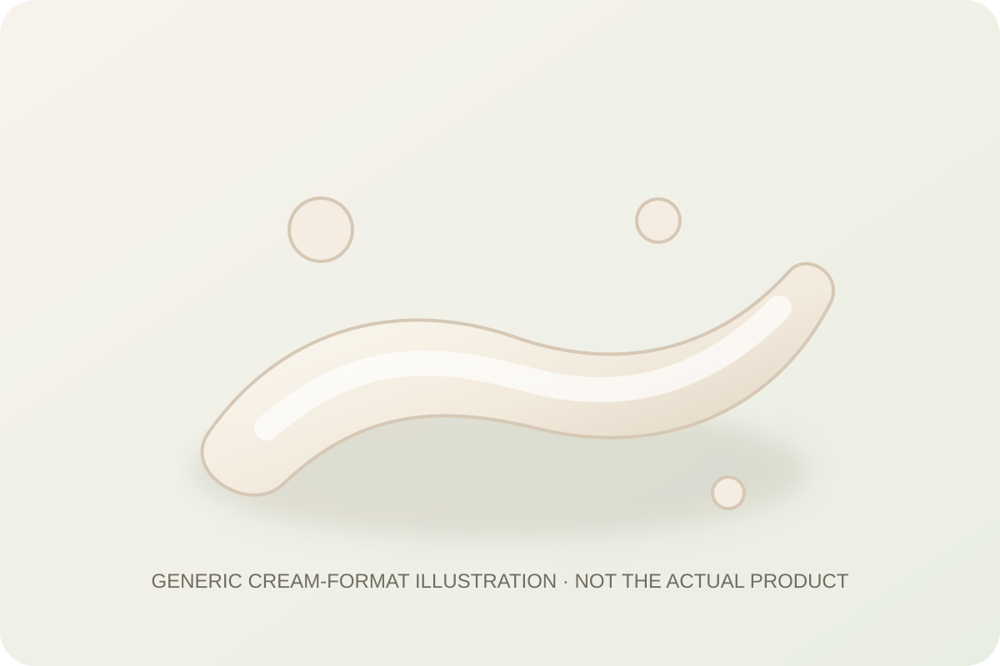

Aggregate data captured September 14, 2026. This article uses only the rating, rating distribution, and survey shares displayed on Olive Young Korea. It does not reproduce or translate an individual review, reviewer name, or user photo.

The short version: the listing averaged 4.8 stars across 11,779 review records. Five-star ratings accounted for 83% of the displayed distribution. Dry skin was the largest skin-type response at 48%, wrinkle/brightening was the leading concern response at 48%, and 73% selected the gentle response.
The average displayed rating was 4.8 out of 5. The detailed distribution showed 83% five-star, 13% four-star, 3% three-star, 0% two-star, and 0% one-star. These rounded shares total 99%, so they should remain the retailer's displayed percentages rather than being converted into exact review counts. The aggregate tells us that high ratings dominated the linked record pool. It does not tell us why someone chose a score, how long they used the cream, or whether a perceived change came from this item.
A five-figure review base makes the displayed average less vulnerable to one unusually high or low score than a tiny sample would be. That is useful for describing storefront sentiment. It is not a controlled study, a unique-buyer count, an independently verified repurchase rate, or a guarantee that a new buyer will share the majority view. Bundle changes can also connect feedback from related configurations, so the record pool should not be treated as evidence about every extra in the current set.
The captured skin-type poll showed 48% dry, 47% combination, and 5% oily. Dry skin was technically the largest group, but only by one percentage point. The honest reading is that dry and combination respondents were almost equally represented, while oily respondents formed a much smaller share of the displayed poll.
These are representation shares, not suitability scores. A dry-skin reader can reasonably note that the poll includes many respondents who selected dry skin, but cannot infer that 48% obtained a benefit. A combination-skin reader is nearly as represented. For oily skin, the smaller 5% share means the snapshot contains less category-specific context. Climate, routine, amount, eye-area sensitivity, contact-lens use, allergies, and other products were not controlled.
The separate concern poll displayed 48% wrinkle/brightening, 37% hydration, and 15% soothing. The leading label fits the commercial context of an eye cream, but it is still a questionnaire response rather than a measured result. The display does not show that 48% experienced a reduction in wrinkle depth, pigmentation, dark circles, or another visible outcome.
The 37% hydration share likewise cannot be translated into a measured change in water content. The 15% soothing share does not establish treatment of irritation. There is no control group, treatment protocol, standardized before-and-after assessment, or independent clinical measurement in the storefront aggregate captured here. Those limits matter more for the eye area, where cosmetic satisfaction and medical or ophthalmic outcomes are not interchangeable.
The irritation poll showed 73% gentle, 24% ordinary, and 2% felt irritation. Rounded shares total 99%. Gentle was clearly the leading answer, which is useful as a broad perception signal. It is not a safety certificate, an adverse-event rate, or proof that the formula will be comfortable for sensitive eyes.
The poll denominator was not displayed separately from the overall review count. Even a strong majority cannot rule out stinging, watering, allergy, eyelid irritation, or discomfort from accidental eye contact. Follow the current package directions and warnings, avoid treating the review average as medical advice, and seek qualified guidance when an eye condition, prescription product, known allergy, or prior serious reaction raises the stakes.

Only a general category description is appropriate: an eye cream is usually designed for controlled placement of a small amount around the eye-area skin. That says nothing reliable about this product's exact viscosity, slip, richness, finish, scent, absorption, residue, pilling, or compatibility with makeup. I did not open, apply, smell, spread, or wear it.
The local visual is deliberately brand-neutral and code-drawn. It illustrates a generic small cream ribbon without copying the retailer's package, product photographs, or shopper images. Actual application amount, permitted placement, frequency, daytime or nighttime use, and compatibility with sunscreen or cosmetics should come from the current regional label rather than an illustration or an aggregate score.
At capture, the Korean listing displayed a ₩53,000 reference price and a ₩32,900 promotional price. The title described 15 ml of eye cream with one calming barrier sheet mask and a 7 ml glow serum extra. That bundle affects value comparisons: the displayed sale figure is not automatically comparable with a standalone tube, a different promotional set, or another market's package.
Promotion dates, gifts, stock, taxes, shipping, seller, and regional formula can change. Treat the captured price as a dated Korean-market reference, not a current quote or savings guarantee. Compare the final checkout price against the exact amount of eye cream you intend to use, and give extras only the value they genuinely have for you.
This snapshot did not preserve a complete current ingredient list or verified directions, so no ingredient percentage, fragrance status, sun-protection claim, or mechanism is inferred from the product name. “Hyaluron” and “3X” are naming or merchandising terms in this context; they do not supply a dose, prove clinical performance, or show that regional formulas are identical.
Dry skin was the largest displayed response at 48%, just one point above combination skin. That makes the poll well represented by both groups, but it does not prove the cream works better for either one.
No. The average summarizes shopper ratings, while the 48% wrinkle/brightening number identifies the largest concern-poll label. Neither is an objective measurement of wrinkle depth, pigmentation, or treatment effect.
The gentle response led at 73%, but the data cannot predict an individual's tolerance and is not an ophthalmic safety evaluation. Check the current warnings and ingredient list, and use extra caution with known sensitivity or an eye condition.
This analysis did not capture a complete current label or verified directions, so it confirms neither. Do not infer those features from the product name, review average, or promotional imagery.
The captured discount and extras may improve value for someone who wants the exact set. Compare the final price per 15 ml of eye cream and avoid assigning value to gifts you would not otherwise choose. Current availability and configuration should be verified at checkout.
Eucerin Hyaluron 3X Eye Cream had a strong captured storefront profile: 4.8 stars from 11,779 review records, with 83% of displayed ratings at five stars. Dry and combination respondents dominated the skin-type poll, wrinkle/brightening led the concern poll, and gentle was the leading irritation response.
That is enough to make the product a reasonable comparison candidate, not enough to promise a result. The aggregate cannot establish wrinkle reduction, brightening, hydration change, eye safety, or individual tolerance. Use it alongside the current label, exact regional pack, final price, and your own eye-area constraints.
Source: Olive Young Korea product page, captured September 14, 2026. Product title, price, pack, rating, rating distribution, and poll values can change.
← Back to all analyses · Review-volume ranking · Skin-type poll view